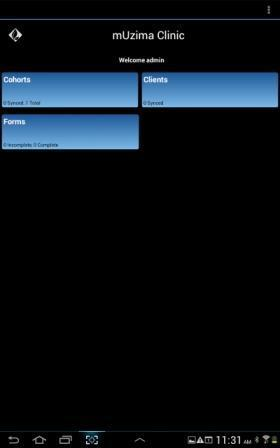

mUzima
programu ya android ambayo hutoa fomu za html5 zilizo na mantiki iliyojengwa ndani na vikwazo maalum. Programu hii ina vidokezo mbalimbali ikiwa ni pamoja na maandishi, nambari, eneo na picha ama video ambayo inaweza kufanya kazi katika hali ya mtandaoni na nje ya mtandao.
Kusakinisha programu
Utahitaji kifaa cha android ili kusakinisha programu ya mUzima. Ikiwa huna kifaa cha Android, utahitaji kifaa cha emulator ili usakinishe programu ya mUzima.Programu ya mUzima toleo 3.0 linatumia toleo la Android 7.0 na matoleo mapya zaidi.
Kutumia programu
Programu ya muzima itaonekana kwenye droo yako ya programu. Chagua programu ya mUzima ili kuizindua
Hatua ya Kwanza
- Zindua programu ya mUzima kwenye kifaa chako.
- Bofia kitufe cha INAYOFUATA kwa onyesho la slaidi ya vipengele vya matumizi ya programu ya mUzima. ama, bofia kitufe cha RUKA uendele na usanidi wa programu ya mUzima
Hatua ya pili
- Soma na ukubaliane na sera za matumizi ya programu ya mUzima ukitumia visanduku vya kuteua.
- Bofia kitufe cha KUBALI YOTE. Kisha bofia kitufe cha INAYOFUATA uendelee na usanidi wa programu ya mUzima.
Hatua ya tatu
Unapoingia kwenye programu ya mUzima mara kwanza, utakuwa na vidokezo vitatu vya kuingiza maandishi.
- Anuani ya mtandao: hichi ni kidokezo cha anuani ya mtandao wa seva ambayo programu itawasiliana nayo. Kwa mfano, “https://demo2.muzima.org”.
- Jina la mtumiaji: ingiza jina la mtumiaji halali wa programu ya mUzima. Mtumiaji huyu lazima awe mtoa huduma halali kwenye seva.
- Neno la siri: ingiza nenosiri la jina la mtumiaji lililotolewa katika kidokezo cha jina la mtumiaji.
- Bofia kitufe cha INGIA.
Baada ya kufanikiwa kuingia kwenye programu, utahitajika kuisanidi programu ya mUzima.
Hatua ya nne
- Programu ya mUzima tolea numbari 3.x inatumia usanidi wa kuongozwa.
- Chagua programu utakayo tumia katika orodha ya programu..
- Bofia kitufe cha INAYOFUATA uendelee na usanidi wa programu ya mUzima.
Hatua ya tano
- Programu ya mUzima itasanidiwa.
- Muda wa kusanidi programu unategemea kiwango cha data kinachopakuliwa kutoka kwenye seva.
Hatua ya sita
- Programu ya mUzima itasanidiwa kwa mafanikio
- Bofia kitufe cha KAMILISHA ili kumaliza hatua za usanidi.
- Baada ya kumaliza hatua za kusanidi programu ya mUzima, programu ya mUzima itaonyesha ukurasa wa nyumbani. Programu ya mUzima iko tayari kwa matumizi.
